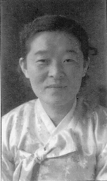
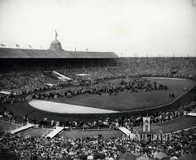
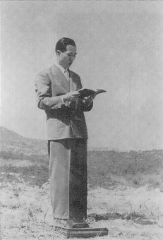
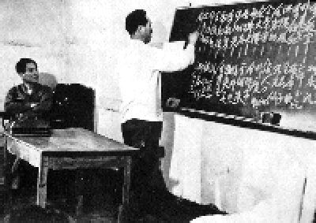

1952
1952 10 maj fröken Kang Hyung Sil återupprättas.

Dom avslutar att skriva ner Uppenbarelsen Principerna.
Han dikterar och Won Pil skriver, utom sista kapitlet om Återkomsten som Han själv skriver ner.
maj 1952 Evangelisten Billy Graham samlar över 100 000 människor i

Wembley Stadium London.
1 dec. Pastor Yo Han Lee återupprättas.

Se hans 3 böcker
1
23
Faith and Life (Tro och Liv) 1977.


De fortsätter att vittna!

En 40 års period av ökenvandring av gottgörelse för perioden 1945-1952; startar som avslutas först 1992.